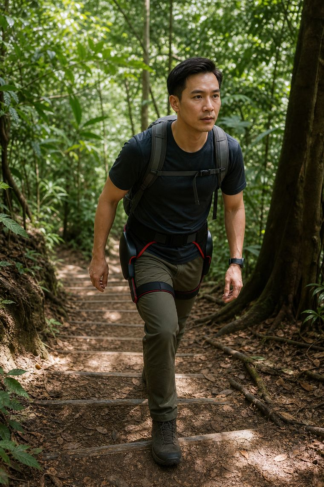
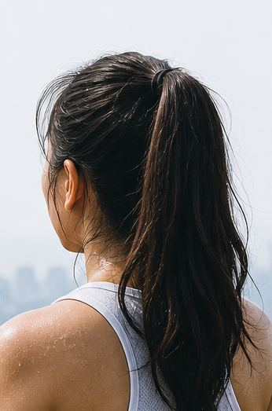

简短答案
攀登时，登山杖和动力外骨骼哪个更好？
它们做的是不同的工作。登山杖增加平衡、在下坡时为膝盖减负，代价是占用双手，并在长时间上坡中增加手臂疲劳。动力髋外骨骼在髋屈肌——真正驱动攀登的肌群——输出最高 16 Nm，攀登省力最高 35%，续航延长 2–3 倍。对于一次轻松的短途山径，登山杖已经足够；但对于持续爬升、反复训练或伤后重返山径，髋部助力的收益会不断累积。
35%持续攀登省力
2–3×单次充电行走续航
IP54热带灰尘与雨水
这个品类高估了登顶，低估了算术
关于消费级外骨骼的公开内容中，将近一半是探险影像——山脊线上的剪影。而可量化地看，它也是这个品类中最缺乏说服力的素材。徒步者真正想知道的是算术：在多大坡度上、以多少额外重量、换来多少省力。那就把算术摆出来。
各自介入的环节
诚实的分工：
- 登山杖——在平衡、过溪与下坡的膝盖负荷上极为出色。它把力气转移到肩与臂；在长时间上坡中，那是转移，而非节省。
- 动力髋——在每一步的屈曲窗口内输出最高 16 Nm，直接针对负责攀登的肌群。攀登省力最高 35%，续航 2–3 倍。
- 两者并用——很常见。下坡与手脚并用路段靠登山杖，上坡靠髋部助力。
它如何赚回自己的 2.4 kg
任何穿戴设备都必须先「赚回」自己的重量，才谈得上为你省力。在 3 公里的平坦栈道上，大致打平。但在持续爬升中——武吉知马的重复登顶、含天桥爬升的南部山脊纵走，或为出国登顶所做的训练周期——省力会每一步累积，2.4 kg 就不再是话题了。
热带山径考验的是密封，而非动力
本地山径潮湿、多尘、雨说来就来。IP54 涵盖防尘与任意方向的溅水，而那才是午后麦里芝栈道上真正的失效模式——不是扭矩，也不是电池。


常见问题
我还需要登山杖吗？
许多徒步者保留登山杖用于下坡与平衡，同时用髋部助力应付上坡。它们解决的是不同问题，并非二选一。
能装进日用背包吗？
可以——折叠后重 2.4 kg，收纳体积大致相当于一件轻薄保暖层。
4 小时够一日徒步吗？
对多数本地一日徒步而言够用，因为助力是按需输出而非持续输出。持续爬升耗电更快——多日行程请规划充电点。
可以用它为出国登山做训练吗？
可以，许多用户就是这么做的——但如果正式登顶时不带助力，训练中也应安排无助力的课次。助力会改变训练负荷，这既是它的价值，也是需要注意的地方。
我们为何写这一篇 · W4 CONTESTED 徒步与山径框架占据品类内容的 47.7%，表现却仅为 0.69 倍。「科技」主题覆盖 83.2%（0.90 倍）；「探险者」30.3%（0.32 倍）；「赋能」73.5%（0.74 倍）。品类最喧闹的赛道也是最弱的赛道。只能以更锐利、可量化的角度进入——绝不做又一个登顶英雄。